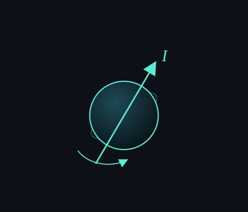

This note was split from a 2021 class note on spin, magnetic moment, and gyromagnetic ratio.
To understand nuclear magnetic resonance, it helps to start with spin, before moving on to magnetic moment and gyromagnetic ratio.
Protons, neutrons, and electrons have an intrinsic angular momentum called spin. A nucleus can also have a net spin, although some nuclei have zero total spin.
The part that can be confusing is that spin does not mean a particle is literally rotating like a ball. The small-ball picture can help with the later vector diagrams, but it is only an analogy. OpenStax: electron spin.

For MRI, the connection to a magnetic field comes through the magnetic moment associated with nuclear spin. We will use I for nuclear spin angular momentum, then connect it to the magnetic moment μ in the following notes.
The spin quantum number takes integer or half-integer values: 0, 1/2, 1, 3/2, 2, and so on. Electrons have S = 1/2, and the 1H nucleus used in most MRI has I = 1/2. Here, 1/2 labels a spin quantum number; it is not an angular speed.
In the NMR process discussed here, a non-zero nuclear spin is required for the magnetic interaction with the RF field. The static field B0 sets the energy splitting, while RF excitation drives transitions between the spin states. A 1H nucleus is a single proton, which is why conventional 1H MRI is often called proton imaging; the name does not apply when imaging another nucleus.
For a spin-1/2 nucleus in B0, there are two spin projections along the field. At thermal equilibrium, the lower-energy state has a slightly larger population. This small imbalance gives the sample a net magnetization; it does not mean that every nucleus points in the same direction. OpenStax: NMR spectroscopy.
Next note: magnetic moment.
Further info: https://www.mriquestions.com/spin.html
中文
這篇從 2021 年的課間筆記拆分而來，當時把 spin、磁矩和旋磁比寫在同一頁，這裡先談 spin。
要理解核磁共振，可以先從 spin（自旋）開始，再接著看磁矩與旋磁比。
質子、中子與電子都具有一種內在的角動量，稱為 spin（自旋）；原子核也可能具有總自旋，但有些原子核的總自旋為零。
這裡容易混淆的是，spin 並不是說粒子真的像小球一樣在旋轉。小球的想像可以幫助理解後面的向量圖，但它終究只是比喻，不能完全照字面解讀。OpenStax：電子自旋。
在 MRI 裡，核自旋透過相伴的磁矩與磁場產生交互作用；這裡先用 I 表示核自旋角動量，後面再接著看它與磁矩 μ 的關係。
自旋量子數只能取整數或半整數：0、1/2、1、3/2、2……；電子固定是 S = 1/2，MRI 最常用的 1H 原子核則是 I = 1/2。這裡的 1/2 是量子數的標記，並不是粒子轉動的速度。
就這裡討論的 NMR 過程而言，原子核需要有非零自旋，才能透過磁作用與 RF 場耦合；靜磁場 B0 決定能階差，RF 激發則驅動自旋態之間的躍遷。1H 的原子核就是一顆質子，因此一般 1H MRI 也常稱為質子成像，若換成其他原子核，就不適合再沿用這個名稱。
對放在 B0 裡的 spin-1/2 原子核來說，沿磁場方向有兩種自旋投影；在熱平衡時，處於較低能量狀態的原子核略多一些，這個微小的數目差才形成樣本的淨磁化，並不是每顆原子核都指向同一邊。OpenStax：核磁共振。
下一則：磁矩。